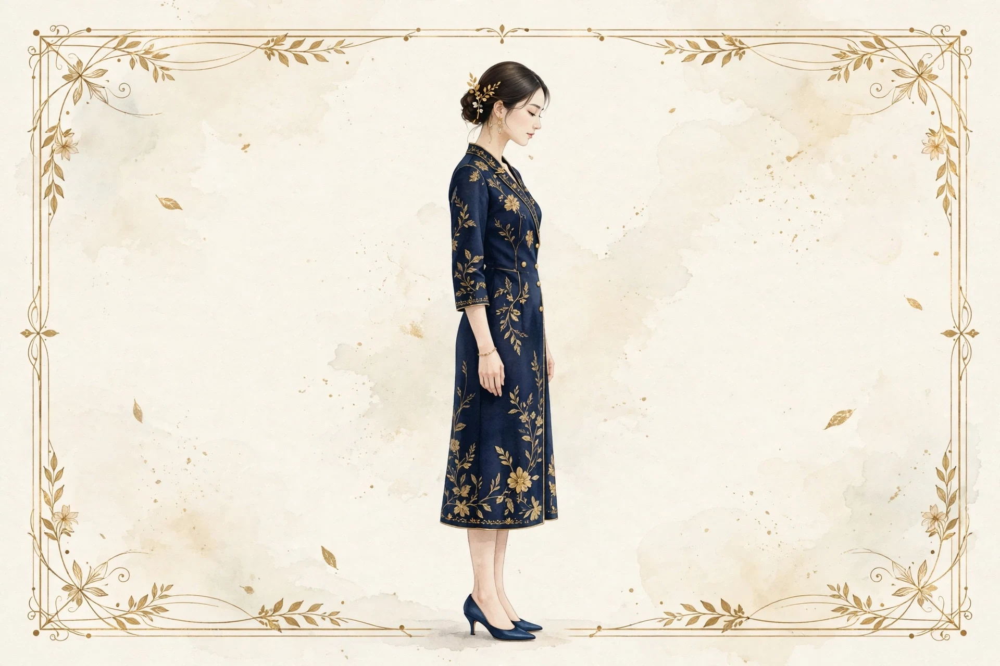

江坂で年末の大掃除の後に気になる姿勢の崩れ｜上を向く作業と片づけの日の過ごし方とセルフケア、受診の目安

12月の江坂は、年末の大掃除が始まる時期です。オフィス街で働く方にとって、休みの日に家の大掃除を進める方もいれば、職場の片づけに参加する方もいます。棚の上を拭き、窓を磨き、重い荷物を運ぶ。そんな一日の終わりに、背中が丸まっている気がする、姿勢が崩れている感じがする、と気になることはありませんか。姿勢の崩れとは、背中が丸まったり、肩が前に出たりしている状態の一般的な呼び方で、掃除の作業姿勢や片づけの動き、疲れなどが重なることがあると言われています。このコラムでは、年末の大掃除の後に姿勢の崩れが気になるときの要因の整理、過ごし方とセルフケア、受診を考える目安についてお伝えします。
#江坂 姿勢#姿勢 猫背#年末 大掃除#大掃除 姿勢#江坂 美容整体
姿勢の崩れとは、どんな状態か
姿勢の崩れは、背中が丸まっている、肩が前に出ている、首が前に出ている、といった見え方や感じ方を指す言葉として使われることが多いです。姿勢は、骨格のバランスや筋肉の使い方、長年の習慣などが関わっていると言われています。姿勢の一般的なとらえ方は、姿勢・猫背の症状ページでも紹介しています。
姿勢の崩れの現れ方は、ひとつの原因だけで説明できるものではありません。デスクワークの姿勢、掃除のような前かがみの作業、睡眠の質、寒さなどが関わっていると言われています。大掃除の日は、こうした要素が重なりやすい一日です。姿勢の崩れが気になったら、その日の作業の進め方を振り返ってみることが、セルフケアの出発点になります。
年末の大掃除の日に重なりやすい要因
要因のひとつは、高い場所の掃除です。棚の上や窓の上の方を拭くとき、首を反らせて上を向く姿勢が長く続きます。上を向いた姿勢が続くと、首や肩に力が入りやすくなります。脚立に立って作業すると、足元が不安定になり、体に力が入りやすくなると言われています。高い場所の掃除は、脚立の高さを調整して無理な姿勢を避け、休みながら進めることが大切です。
次に、重い荷物の片づけがあります。年末の片づけでは、本や書類、使わなくなった物を運ぶ機会が増えます。重い物を持つとき、前かがみの姿勢になりやすく、腰や背中への負担が大きくなります。腰の重さ・腰痛と一緒に姿勢の崩れを感じる日は、重い物は体に近づけて持ち、床から持ち上げるときは膝を曲げてしゃがむ姿勢を意識することが大切です。
長時間の前かがみ作業も見逃せません。床の拭き掃除や低い棚の整理では、前かがみの姿勢が長く続きます。前かがみの姿勢が続くと、背中が丸まり、肩が前に出やすくなると言われています。肩こりと一緒に姿勢の崩れを感じる日は、作業の合間に体を起こして伸びをする、肩をゆっくり回す、といった小さな動きを挟むことが大切です。
年末の大掃除の日の姿勢の整え方とセルフケア
まず、掃除の進め方を見直してみてください。大掃除は一度に終わらせようとせず、場所ごとに分けて進めることです。30分ごとに休みを入れ、温かい飲み物を飲みながら座って休みましょう。休みの時間に、体を起こして深呼吸をする、両腕を広げて胸を開く、といった小さな動きを挟むと、姿勢の崩れを感じにくくなります。
作業の姿勢の工夫も、掃除の日のセルフケアのひとつです。高い場所の掃除では、脚立の高さを調整し、首だけを反らせないようにしましょう。低い場所の作業では、しゃがむ姿勢を取り、膝をついて進めるのも、ひとつの方法です。重い物を持つときは、体に近づけて持ち、無理な姿勢を避けることが大切です。
掃除のあとの過ごし方も大切です。掃除のあとは、ぬるめのお湯にゆっくりつかり、肩や背中を温めると、こわばりがほぐれやすくなります。入浴後は、温かい飲み物を飲みながら休み、スマートフォンの画面から離れて目を休めると、夜の休みにつながりやすくなります。
江坂の年末の片づけと姿勢の見直し
江坂の年末は、オフィス街の片づけと家の大掃除が重なる時期です。職場の片づけでは、書類や資料を運ぶ機会が増えます。重い段ボールを持つときは、体に近づけて持ち、膝を曲げて持ち上げる姿勢を意識しましょう。デスクまわりの片づけでは、椅子の高さを見直し、足裏全体が床につく姿勢を確かめてみてください。
買い物の荷物の持ち方も、姿勢の日の見直しポイントです。年末の買い物では、荷物が増えて片手に重さが集中しやすくなります。荷物は両手に分けて持つ、リュックを使う、といった工夫が役立ちます。買い物の荷物が重い日は、途中でコインロッカーに預けて身軽になるのも、ひとつの方法です。帰宅後は、ぬるめのお湯にゆっくりつかり、肩や背中を温めましょう。
掃除道具の選び方も、姿勢の日の見直しポイントです。柄の長いモップやワイパーを使うと、前かがみの姿勢を避けて作業ができます。重い掃除機は、軽いものを選ぶと、持ち運ぶたびの負担が軽くなります。掃除の道具は、自分の身長に合った長さのものを選ぶと、無理な姿勢になりにくくなります。
年末の大掃除の日の水分と食事の工夫も、姿勢の日の見直しポイントのひとつです。掃除の日は、体を動かす時間が長くなり、水分が不足しやすくなります。作業の合間に、温かい飲み物をこまめに取りましょう。昼食は、温かい汁物を一品加えると、体が温まりやすくなります。作業のあとは、早めに夕食を済ませ、ゆっくり休む時間を作ることが大切です。
受診を考える目安
セルフケアを続けても、姿勢の崩れと一緒に気になる変化がある場合は、早めに医療機関を受診してください。背中の痛みが強くて動かしにくい、手足のしびれがある、姿勢の崩れが急に進んだ、といった状態がある場合は、自己判断で様子を見るのではなく、整形外科やかかりつけ医に相談することが大切です。
姿勢の崩れが長く続き、セルフケアを続けても変わらない場合も、医療機関に相談してみてください。姿勢の崩れを感じる時間帯や、掃除の日の作業内容、気になる変化をメモしておくと、受診のときに伝えやすくなります。
受診のときに伝えることも、まとめておくと役立ちます。姿勢の崩れを感じる場面（大掃除のあと・デスクワークのあと・朝起きたとき）、背中や肩の重さの出るタイミング、続いている期間、手足のしびれの有無、睡眠の様子をメモしておくと、医師に伝えやすくなります。問診では、仕事の内容や生活リズムも聞かれることがあります。気になる変化を書き留めておくと、受診のときに役立ちます。
それでも年末の大掃除のあとの姿勢の崩れや体の重さが抜けない日は、プロの手に委ねる時間も選択肢の一つです。美容整体ステラミラ江坂は、大阪・江坂エリアの女性専用サロンです。オイルマッサージと美容整体で、年末の大掃除の日に気になる姿勢の崩れや肩・背中のこわばりを丁寧にほぐすお手伝いができるよう、準備を進めています。料金は90分10,000円の単一価格（初回割引なし）、営業時間は月〜土17:00〜22:00・日曜休みです。ご予約はLINE公式で受け付けています。お問い合わせ用LINE公式アカウントを開設しました。開院まで、このコラムで季節のセルフケアをお届けしていきます。